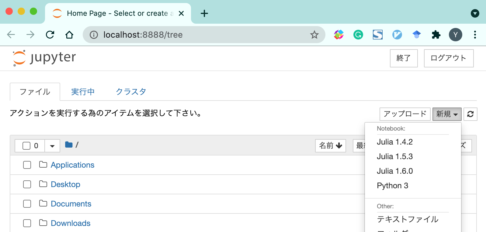
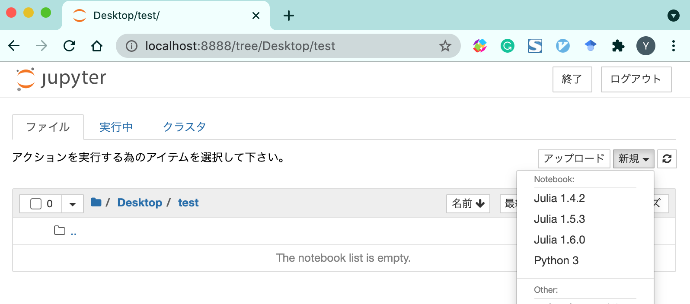
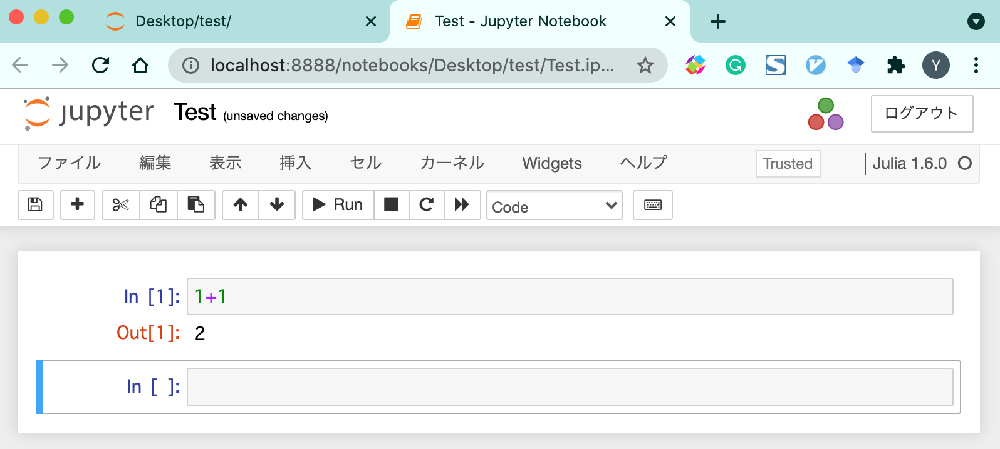
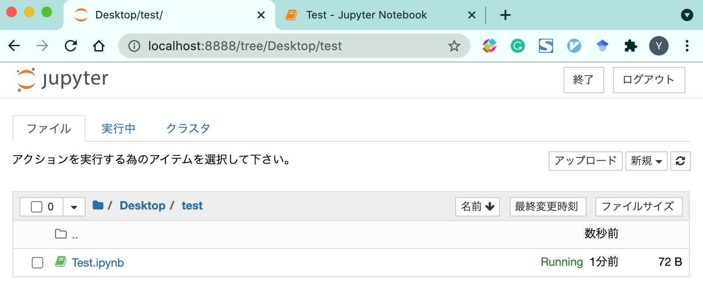

Jupyter のインストール
Julia の利用の仕方は色々ありますが，Jupyterというものを使うことがよくあります．この講義でも Jupyter を使って学習を進めていきます．Jupyter とは何かを説明するよりも，習うより慣れろ，の精神でさっそく導入してみましょう．なお，コンピュータやプログラミングに詳しい学生は，Jupyter のweb ページを参考に JupyterLab をインストールするのもよいでしょう．
Julia を起動し，
julia>
の状態で ] を一回押すと
(@v1.6) pkg>
となると思います（バックスペースを押すと元に戻ります）ここで，
(@v1.6) pkg> add IJulia
としてエンターキーを押しましょう（その後しばらく待ちます）．そして，
julia>
に戻り，
julia> using IJulia
としてエンターキーを押しましょう（少し待ちます）．そして
julia> notebook()
とすると，おそらくは
julia> notebook()
install Jupyter via Conda, y/n? [y]:
と表示されるので，y を押してエンターキーを押します．すると既定のブラウザ（もしくはどのブラウザで開くか聞かれたときは好きなものを選択）で次のようなページが開きます．
ここで，右上の 新規 (もしくは New) をクリックすると

のようになると思います．おそらく皆さんの環境では「Julia 1.6.0」と「Python 3」が表示されていると思います．左に Applications や Desktop といった項目がありますが（環境によって何が表示されるかは異なります），ここをクリックしていけば所望のフォルダにたどり着けるでしょう．例えば，Desktop にある test というフォルダに移動してみると（そのフォルダが空ならば）次のようになります.

ここで，「新規」から「Julia 1.6.0」をクリックすると，次のようなページが別ウィンドウで開きます．
これは，1+1 と書いてエンターキーを押したところの画面です．一番上の Untitled がファイルの名前になっていて，クリックすれば修正可能です．

ここで，1 つ目のページに戻ると，確かに，Test.ipynb というファイルが生成されていることが分かります．

ipynb は Jupyter を使うときの拡張子です．また，この画面で Test.ipynb をクリックすればさきほどの画面が開きます．
さて，サンプルファイルを用意してみました．Raw から，名前を付けて保存をクリックすれば Sample.ipynb というファイルをダウンロードできるはずです．ダウンロードできたら Jupyter で実行してみましょう．